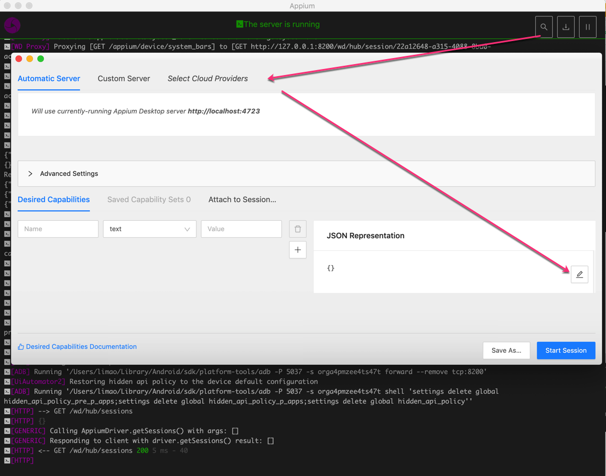
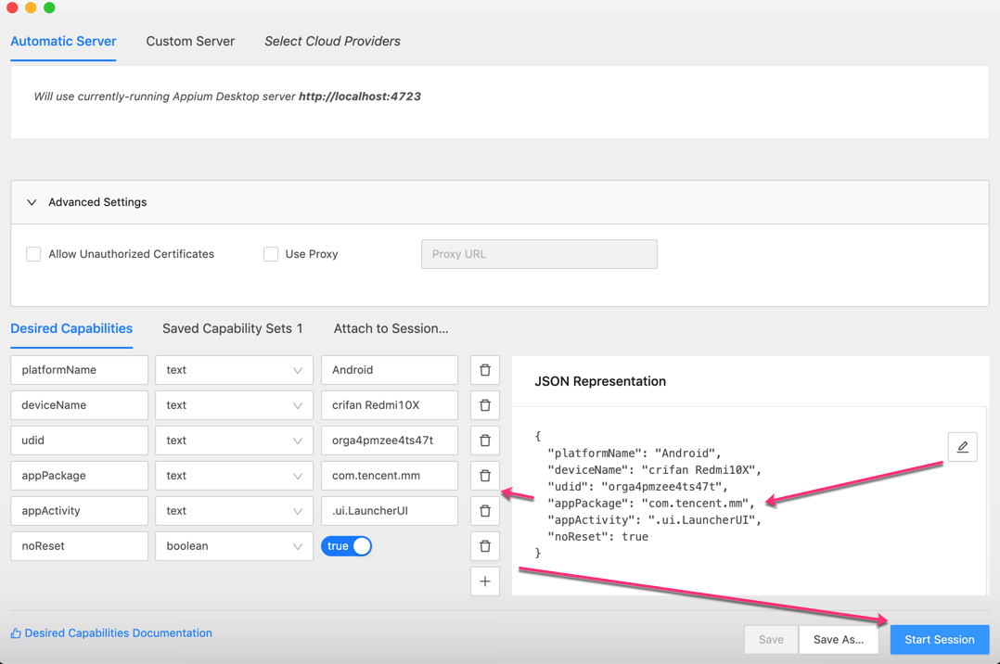
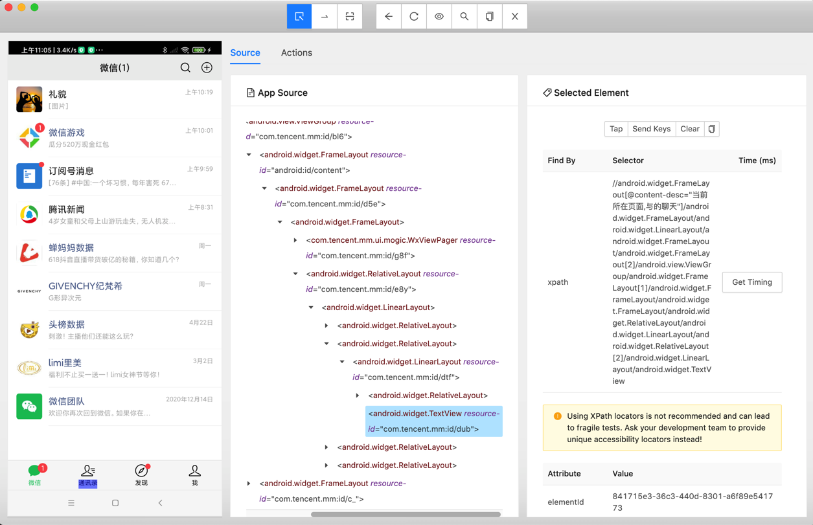
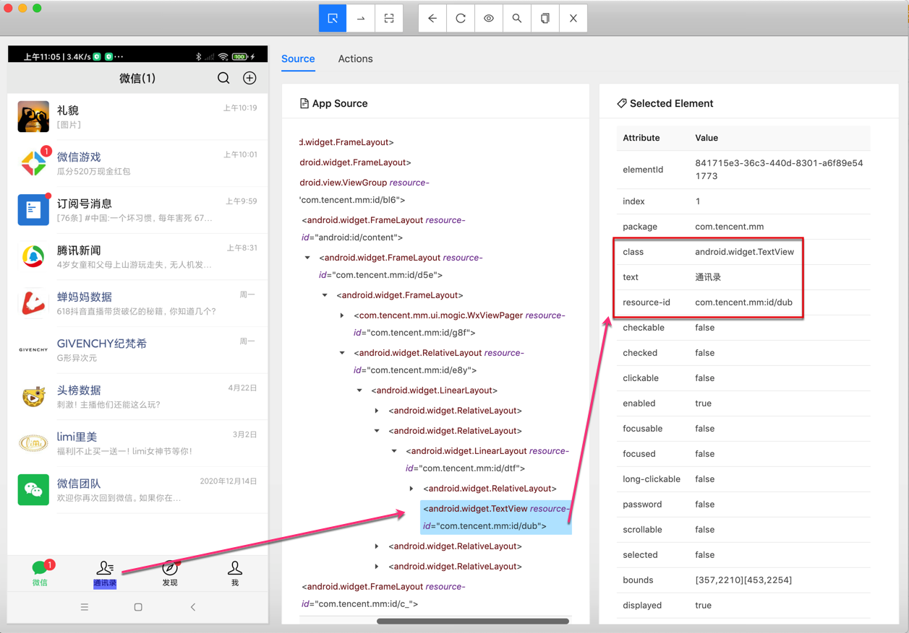
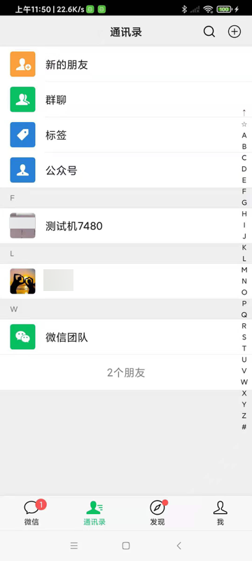

调试界面
调试安卓界面
Mac中用Appium的界面调试工具去调试安卓手机端的界面
在Appium的桌面客户端中，点击 放大镜🔍，启动参数配置界面：

点击JSON Representation的编辑按钮，输入Capability的json配置
比如此处是：
{
"platformName": "Android",
"deviceName": "crifan Redmi10X",
"udid": "orga4pmzee4ts47t",
"appPackage": "com.tencent.mm",
"appActivity": ".ui.LauncherUI",
"noReset": true
}
点击Save，自动保存和解析出相关参数：

点击Start Session，（稍等片刻）即可启动调试界面
然后点击手机页面中的元素，右边即可看到属性：


也可以拷贝出属性值：
Attribute Value
elementId 841715e3-36c3-440d-8301-a6f89e541773
index 1
package com.tencent.mm
class android.widget.TextView
text 通讯录
resource-id com.tencent.mm:id/dub
checkable false
checked false
clickable false
enabled true
focusable false
focused false
long-clickable false
password false
scrollable false
selected false
bounds [357,2210][453,2254]
displayed true
其中，可以用于定位的，一般是用：
class：android.widget.TextViewtext：通讯录resource-id：com.tencent.mm:id/dub
写成代码，可以是：
driver.find_element_by_xpath("//android.widget.TextView[@resource-id='com.tencent.mm:id/dub']")
也可以是：
driver.find_element_by_xpath("//android.widget.TextView[@text='通讯录']")
即可用上述定位元素的代码，去调试你的业务逻辑了。
比如此处可以接着点击通讯录：
contactElement = driver.find_element_by_xpath("//android.widget.TextView[@text='通讯录']")
contactElement.click()
进入通讯录的tab页面了：

心得：
- appium 和 Appium的GUI界面调试工具：没有uiautomator2的weditor好用
- appium（不论是Python的代码，还是 界面调试工具）连接了安卓手机后（比如打开了微信app)，会导致用户无法正常手动操作(微信)
- 而weditor，就不会影响用户手动操作
- appium（不论是Python的代码，还是 界面调试工具）连接了安卓手机后（比如打开了微信app)，会导致用户无法正常手动操作(微信)
结论：
- appium不好用。不建议继续用appium
- 建议换用：uiautomator2 + weditor